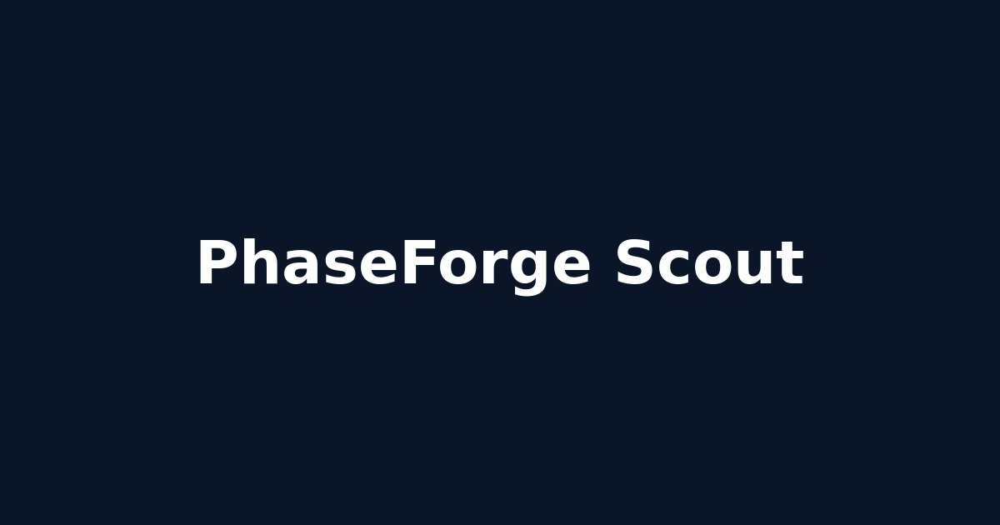
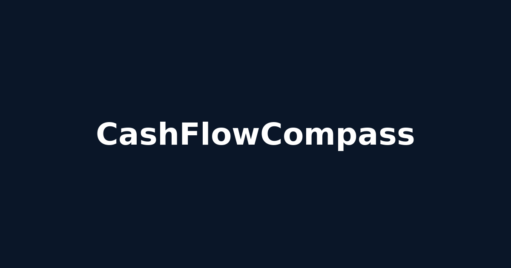
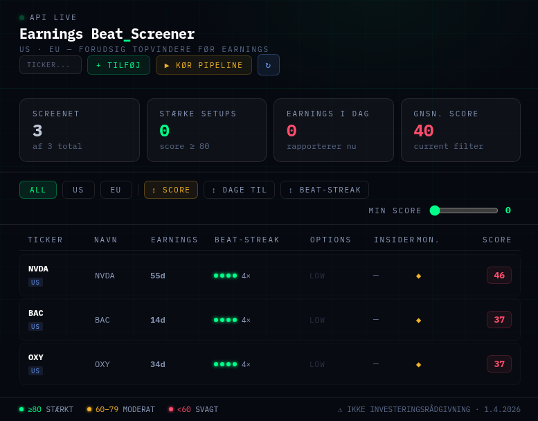
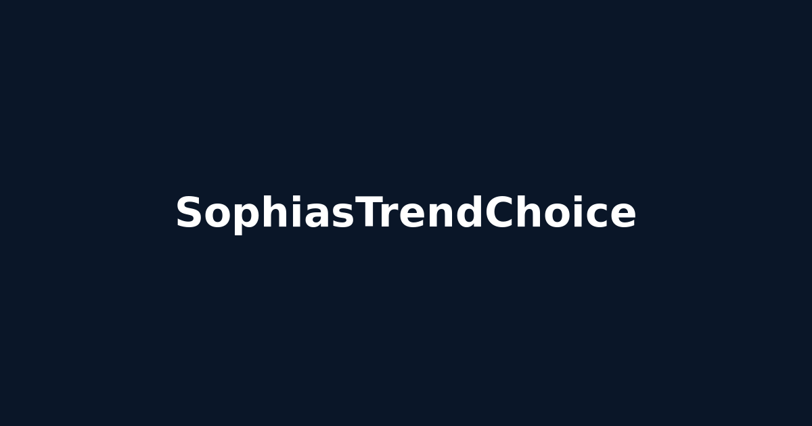
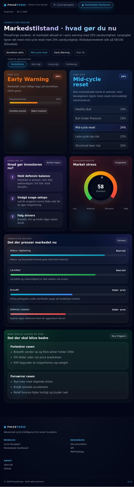
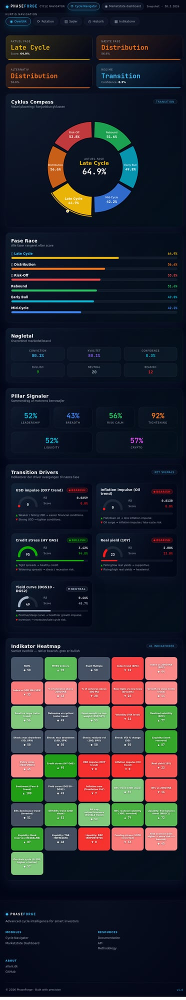

Full-stack developer specializing in .NET, financial data systems, and phase-aware market analysis. Building tools that transform complex data into actionable insights.
Building the future of financial analysis

Phase-aware stock discovery with live data integration. Intelligent scoring system that adapts to market conditions. Features dynamic universe expansion, comprehensive tooltips, and REST API.

DCF and Reverse DCF valuation calculator with real financial data. 7-tier recommendation engine with WACC calculations and Gordon Growth terminal values.

Stock screener calculating earnings beat-streaks for market timing signals. Parses SEC 10-Q XBRL filings for full earnings history, beat-streak analysis, and strength scoring.

Fashion outfit builder with Virtual Try-On AI. MARGELLE editorial design with social features, dual AI provider support (Claude Sonnet + OpenAI GPT-4 Vision).

Danish market intelligence dashboard: "Markedstilstand - hvad gør du nu". Real-time phase detection (Early Warning, Mid-cycle Reset) with actionable investor guidance and market stress indicators.

Comprehensive indicator dashboard with 38+ financial indicators. Real market data validation, Cyclus Compass, Pillar Signaler, and interactive heatmap visualization.
Passionate software developer with 15+ years of experience building enterprise-grade financial systems and data-driven applications.
I specialize in .NET (C#), clean architecture, and financial data integration. My current focus is on phase-aware market analysis, DCF valuation tools, and AI-powered fashion technology.
Based in Denmark, working with cutting-edge technologies like Alpha Vantage, FRED APIs, Claude Sonnet, and OpenAI GPT-4 Vision.
Let's discuss your next project